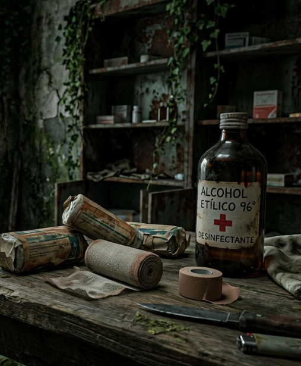
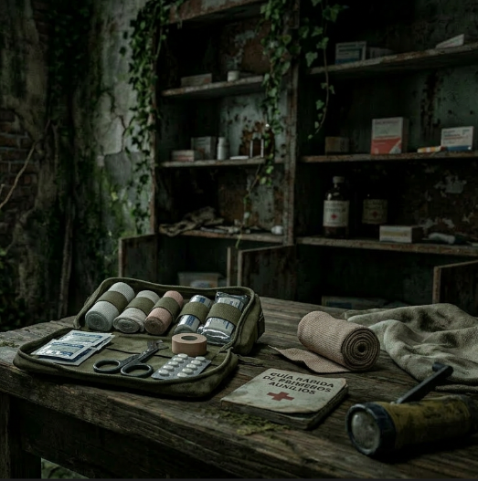
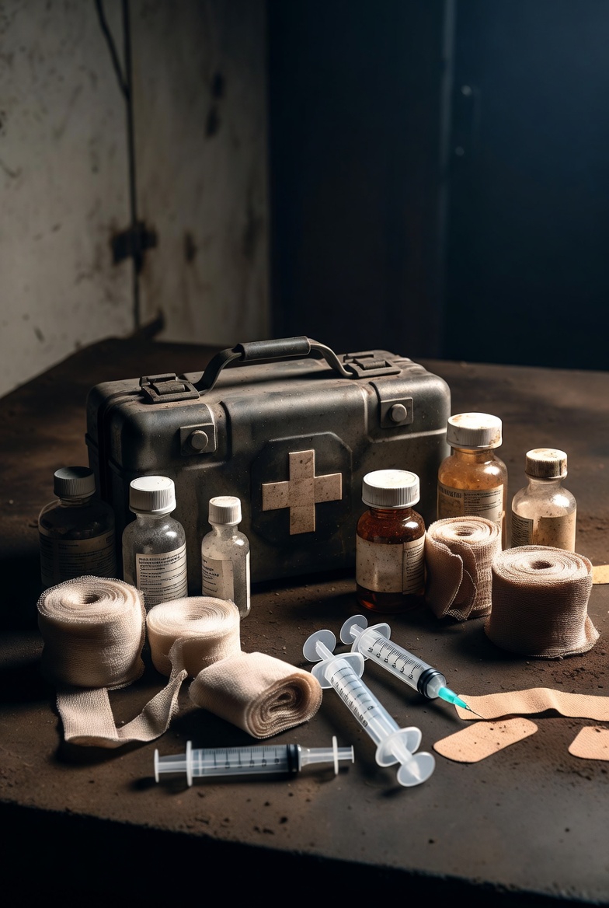
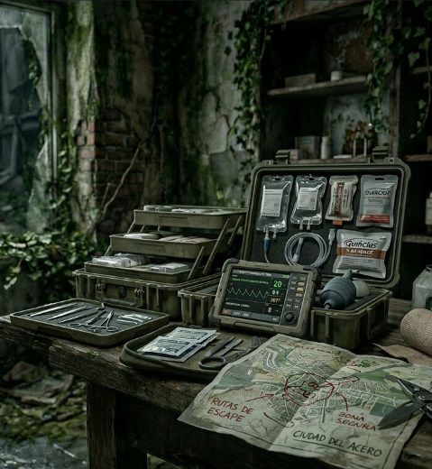

TIRITAS
Esenciales para tapar heridas o rasguños pequeños especialmente si son superficiales
5€Esenciales para tapar heridas o rasguños pequeños especialmente si son superficiales
5€
Vendaje basico en caso de primeros auxilios, esencial para curar heridas grandes
10€
kit medico sencillo para llevar lo necesario en caso de problemas, contiene analgesicos, vendas y botellas de alcohol
25€
kit medico estandar utilizado y distribuidos por el SAI para en casos de emergencia, contiene lo necesario para sobrevivir
50€
kit medico avanzado utilizado por las fuerzas armadas creado para utilizarse en casos extremos de vida o muerte
100€Es poca cosa, pero util en caso de accion inmediata, una vez usado es dificil recuperalo
1€Se solia utilizar para cocinar, pero puede que te sirva para defenderte
100€kit medico avanzado utilizado por las fuerzas armadas creado para utilizarse en casos extremos de vida o muerte
100€kit medico avanzado utilizado por las fuerzas armadas creado para utilizarse en casos extremos de vida o muerte
100€kit medico avanzado utilizado por las fuerzas armadas creado para utilizarse en casos extremos de vida o muerte
100€